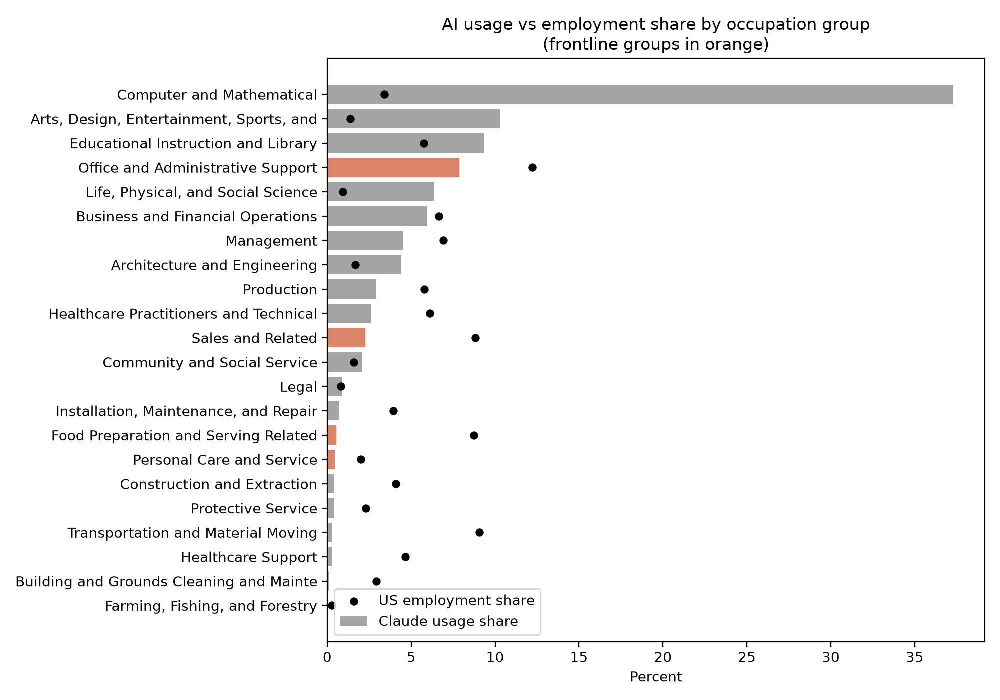
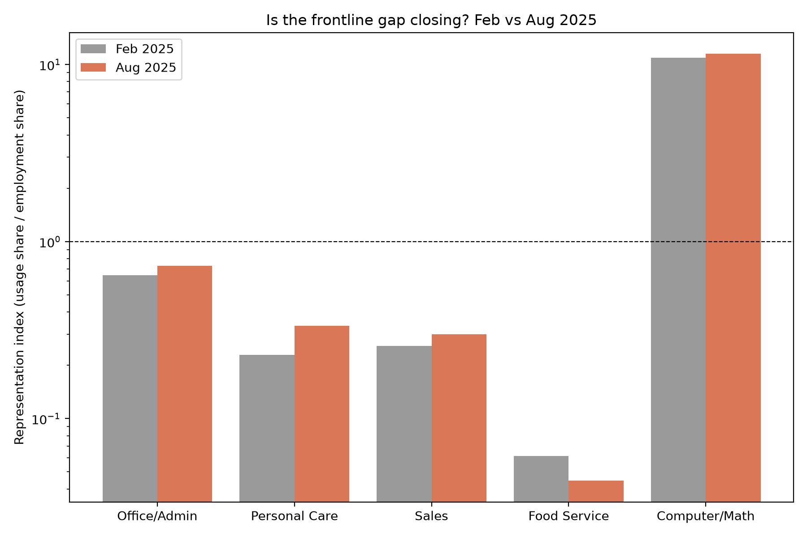
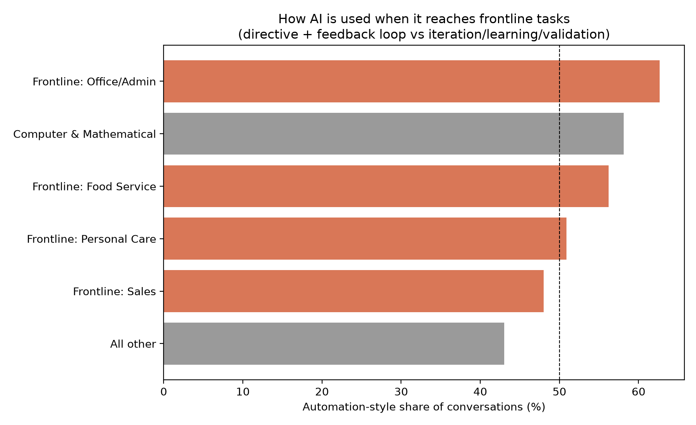
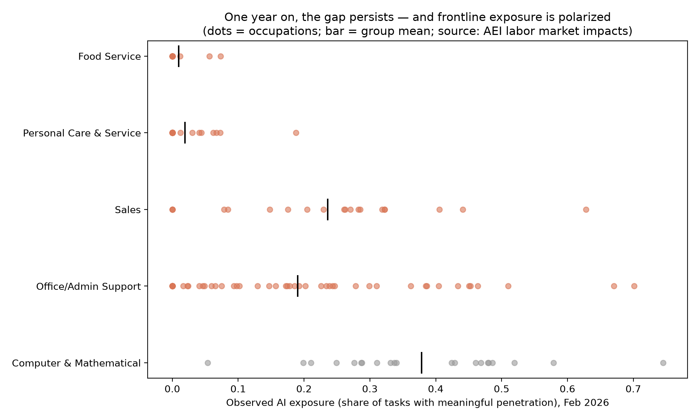

Abstract
Generative AI can raise productivity after workers receive it. But those gains cannot be broadly shared when adoption bypasses large parts of the workforce. This paper measures realized AI adoption in frontline service occupations using the Anthropic Economic Index, O*NET task statements, and U.S. employment and wage data.
Sales, office and administrative support, food preparation and serving, and personal care and service account for 31.7% of U.S. employment but only 11.1% of task-matched AI usage. Correcting an occupational-classification problem reduces the administrative-support representation index from 0.65 to 0.34. The 2025 releases suggest that the gap remained large, while the February 2026 data reveal a divide between screen-mediated and physically co-present frontline work.
Why I studied this
While operating Krishna Foods and Energy, I saw a clear divide between back-office work and the production and retail floor. Forecasting, supplier comparisons, pricing, customer correspondence, and reporting could be digitized. Packing, stocking, serving customers, supervising production, and solving real-time quality problems remained physical and difficult to mediate through a chat interface.
The task-level data reproduce that practical divide: AI enters through the information-processing edges of frontline work, while the in-person core remains largely absent.
Main findings
- Frontline occupations are deeply underrepresented. The four groups account for 31.7% of employment but 11.1% of observed task-matched usage.
- Occupational classification hides part of the gap. Removing four technical occupations lowers the administrative-support index from 0.645 to 0.338.
- Wages explain little of the pattern. Across 585 occupations, the wage elasticity is 0.38 with an HC1 robust standard error of 0.19.
- The gap remained large across the 2025 releases. No frontline group approached parity, though differences in the release pipelines limit trend interpretation.
- Frontline use is more automation-oriented. Automation-style interactions make up 62.7% of frontline administrative use, compared with 43.0% elsewhere.
- Exposure is polarized within frontline work. Customer Service Representatives score 0.70, Retail Salespersons 0.32, and Cashiers 0.08; 44 of 112 frontline occupations register zero exposure.
Selected figures




Data and interpretation
The analysis combines the Anthropic Economic Index, O*NET task and wage data, BLS Occupational Employment and Wage Statistics, and Anthropic’s February 2026 observed-exposure measure.
Representation index = an occupation group’s share of AI usage divided by its share of employment. A value below 1 indicates underrepresentation.
The study is descriptive. It does not estimate a causal effect of AI on employment, wages, productivity, or skills. The data capture Claude usage rather than all generative AI use, and user occupation is inferred from task content rather than directly observed.
Citation
Nandhakumar, S. (2026). The Frontline Exposure Gap: Evidence on AI Adoption in Retail and Service Occupations from Task-Level Usage Data. Working paper.